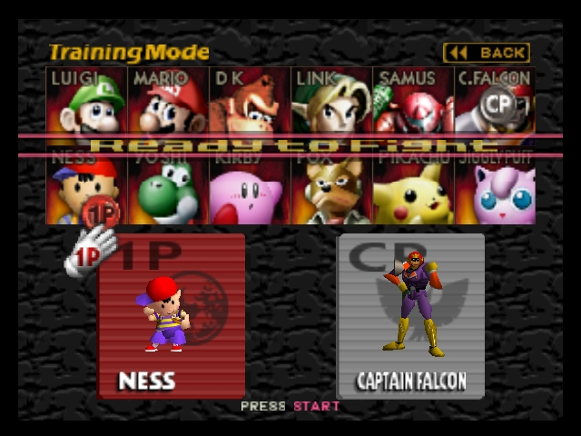
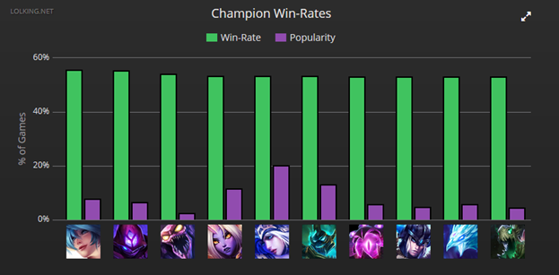

The Concept of META
What is META?
META is an acronym for Most Efficient Tactic Available. It is often used to describe the actions a player can perform that yield the most tactical value. It usually describes an any-case action rather than a specific scenario. A good analogy would be the way people generally open in chess. Over time, META has gained a negative connotation due to the way it holds back players from creating interesting gameplay.
What creates META in a game?
It's difficult to appreciate a game with a large amount of variable parameters. That is to say, if the outcome of the game feels too random and out of your control, you don't feel that your player performance had much of an impact. Because of this, game designers tend to make the number of variable parameters as low as possible. This way, when we reduce that random aspect, the outcome of the game depends more on individual player ability. But you don't want to remove all the parameters of course, or else we take away all the thought process required to play.
Now picture a game with multiple selectable characters (e.g. Super Smash Brothers). In these games, your chosen character is a variable parameter, since they can be changed. If we freeze this parameter and say, 'Player 1 can only play as character A. Player 2 can only play as character B', we run into a problem. With two different characters, one would likely perform better versus the other. It might not be obvious at first, but after playing a while, people want a little switcheroo.

And character selection isn't random; it's per player's choice. So if my opponent picked Character A, and I knew that Character B performs really well against A, I would specifically pick B to counter my opponent. Maybe after a while, when I realize that Character C performs even better than B did against A, I would pick C over B in these scenarios. If we keep running through this thought process a bunch of times, we'll notice that some characters have fewer counters than others. So if I'm picking first and I have this knowledge, I should pick the character with the fewest counters, right? And my opponent will pick one of the counters, of course.
and that's a problem because...
It doesn't matter if there are a lot of characters in your game if your players are only picking a select few.
The same applies for parameters other than character selection. You can add as much variety in your game as you'd like, but if your players aren't enjoying that variety, it essentially doesn't exist. And so because of this, game designers will rebalance characters –– a virtual turning of tables, if you will –– to encourage different gameplay. But it doesn't matter; after a while, players will eventually figure out a new META to fit the current iteration of your game.

How pon tackles the problem of a META
The whole reason why a META exists is because too many parameters remain constant. Players, if given enough time to sit on a set of unchanging parameters, will always figure out an efficient way to do everything. pon tackles this problem by making the parameter terrain layout variable. By using procedural map generation, pon eliminates the opportunity for a META to be formed. By doing this, players are now forced to actually think creatively and devise tactics with their teammates.
And that's the basis of pon.